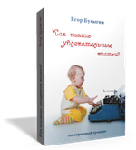

Что делает статью увлекательной?
Бывало ли у Вас такое, что Вы писали ценнейший материал в статье, а она не была оценена по достоинству? И Вы, наверняка спрашивали себя, почему это произошло?
...А ответ заключался в том, что статья просто не была воспринята. Или даже прочитана. Причем, только из-за того, что материал не был достаточно увлекательным на взгляд читателей.
Это как если бы Вы придумали самый модный фасон вечернего костюма и сделали его из старой бабушкиной простыни при помощи степлера и скотча. Ваша задумка могла быть гениальной, но на балу все увидели старую простынь и скотч, а сам концепт даже не заметили.
Так что же делает статьи увлекательными?
В одной статье, безусловно, не опишешь даже все ключевые моменты. Поэтому я дам Вам три основных фокуса внимания, чтобы Вы знали «где копать» ;)
1. Не мешайте все в одной тарелке - используйте сюжеты для структуры
Сюжет придает статье логическую целостность и создает структуру. Благодаря ему, читатель понимает, что Вы хотели ему сказать и в чем суть. К тому же, он превращает статью в своего рода историю, а мы все любим истории ;)
Истории цепляют наше внимание, и ведут его до конца, потому что нам всегда интересно узнать, чем она закончится. Можно, конечно, вставить в статью иллюстрирующую историю (пример или метафору), и это, безусловно, добавит ей очков. Но если вы хотите сделать увлекательной всю статью, а не только ее часть, историей должна быть сама статья.
Но позвольте, как можно сделать историей техническую статью? А методическую или продающую? Вот для этого и нужен сюжет! И если Ваша статья информационная, сюжет сделает из нее увлекательное путешествие; если она техническая, сюжет создаст для нее удобную структуру, а если статья продающая - сюжет последовательно объяснит для чего нужен Ваш продукт и замотивирует его купить.
Естественно, что для каждого типа статьи есть свои типы сюжетов. А для усиления эффекта, Вы можете даже объединять два или три типа сюжетов в одной статье (вот тут, кстати, и начинается мастерство ;)). Но если в статье нет даже самого простого сюжета, она становится похожей на трапезу, в которой все блюда смешаны в одной тарелке.
2. Сделайте статью наслаждением для читателя
Хороший сюжет - это здорово, но он еще не гарантирует, что статья будет прочитана на одном дыхании. Чтобы читатель не мог оторваться от статьи, пока не дочитает ее до конца, каждый ее абзац должен быть «вкусным». Это как фреска на фасаде древнего храма или «мускулистые» контуры спортивного автомобиля. Мы наслаждаемся ими, и Ваша статья может быть таким же наслаждением для читателя.
Существует масса различных приемов, вызывающих аппетит читателя - начиная от оформления статьи цитатами, шутками, схемами, метафорами и примерами… и заканчивая интригами, соблазнительными фрейдизмами, переключением органов чувств и созданием динамики. Если Вы читаете много, то наверняка замечали, что порой текстом можно играть так, как не сыграешь устным словом ;)
Но не переборщите! Если впихнуть в статью все возможные «бантики» и «фишки», вы рискуете потерять стиль. Вы же не мешаете японские суши с узбекским пловом? ;) Достаточно четырех-пяти приемов, которые лично Вам нравятся и удаются лучше всего. Это придаст Вашей статье индивидуальность, а само написание статьи станет для Вас увлекательной игрой или красивым танцем.
P.S. Не подумайте, что я писал эти строчки натощак ;) Просто я люблю работать в приятных кафе, и что-то музыкой навеяло... ;)
3. Яркое начало и сильный конец
Представьте себе, что Вы приехали на экскурсию и видите дворец, о котором ничего прежде не слышали. Внутри дворец может быть сказочным, но снаружи Вы не видите этого, а достопримечательностей много, и Вам приходится выбирать... Главное, что вызовет у Вас желание войти внутрь - это дворцовая площадь, и, безусловно, фасад. Если он прекрасен, сложно устоять перед искушением войти... ;)
Внутри Вы можете пережить удивительные ощущения! Это может быть новый мир... Неповторимая история...
Но вот Вы выходите. И снова видите дворцовую площадь. Но уже иначе - так, как ее видел хозяин дворца, и теперь ничто не скрыто от Вас. Соединяясь с чувствами, которые Вы испытали внутри, этот вид завершает Ваше знакомство с дворцом. И создает заключительное впечатление, по которому Вы будете вспоминать о нем в будущем.
Наше восприятие устроено так, что мы четче всего запоминаем начало и конец. Конечно же, в целостности с содержанием. Но без яркого начала в содержание никто не пойдет, а без сильного конца - его суть не запомнят.
Сущестует много приемов, позволяющих сделать начало ярким, а концовку сильной в самых разных стилях и форматах. Чем больше их Вы будете использовать в разных статьях, тем интереснее будет для Ваших читателей каждая следующая статья.
О чем не было сказано?
Безусловно, это не все вещи, которые делают статью увлекательной. Мы не поговорили о том, как создать хорошее «зерно» статьи, как вызывать эмоции у читателя, и когда этого делать нельзя, как оживлять образы в воображении читателя (тут есть несколько НЛПерских приемов ;)), что можно вытворять с заголовками и откуда вообще брать название статьи, как из средненькой статьи сделать шедевр одним ремейком… Да и о многом другом. Сложно уместить в одной статье то, чему на интернет-тренинге «Как писать увлекательные статьи?» мы посвятили целых пять дней (кстати, скоро он появится).
Но главное, что мне хотелось бы донести этой статьей - талант писать не «врожденное качество». Талант - это хорошая техника и авторские приемы, доведенные практикой до мастерства. И если Вам нравится писать и есть что рассказать людям, при должной тренировке Вы очень скоро можете стать отличным автором. Главное, чтобы внутри горел огонь творца. ;)
P.P.S. Если у Вас есть вопросы, желание прокомментировать или поделиться опытом, напишите, пожалуйста, в комментариях ниже.
Егор Булыгин,
4 ноября 2010
"Как писать увлекательные статьи?" - тренинг в коробке.